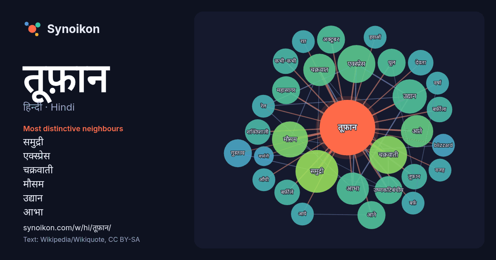

हिन्दी · Hindi · word of the day list
तूफ़ान
“storm” · The words found around it in 234 instances from Hindi Wikipedia, Wikiquote.

Most distinctive neighbours
- समुद्री 14×
- एक्स्प्रेस 12×
- चक्रवाती 12×
- मौसम 10.0×
- उद्यान 9.3×
- आभा 8.9×
- चक्रवात 8.9×
- आते 7.3×
- गुस्ताव 7.0×
- धूल 6.9×
- उष्णकटिबंधीय 6.8×
- महासागर 6.7×
- बर्फ़ीला 6.0×
- बर्फ़ीले 6.0×
- अक्टूबर 5.8×
- तूफान 5.8×
- शक्तिशाली 5.6×
- देवता 5.5×
- आने 5.5×
- कभी-कभी 5.3×
× = how many times more often than in general Hindi Wikipedia text.
Most frequent neighbours
- समुद्री 14
- एक्स्प्रेस 11
- चक्रवाती 11
- मौसम 10
- उद्यान 9
- आते 8
- आभा 8
- कारण 8
- चक्रवात 8
- अक्टूबर 6
- आने 6
- उष्णकटिबंधीय 6
- गुस्ताव 6
- धूल 6
- महासागर 6
- कभी-कभी 5
- तूफान 5
- देवता 5
- नाम 5
- बर्फ़ीला 5
In context
- तूफ़ान या आँधी पृथ्वी या किसी अन्य ग्रह के वायुमंडल में उत्तेजना की स्थिति को कहते हैं जो अक्सर सख़्त मौसम के साथ आती है। इसमें तेज़ हवाएँ, ओले गिरना, Wikipedia snippets · तूफ़ान
- तूफ़ान हैयान(चीनी भाषा: 海燕; मूल 'समुद्रकाक') जिसे फ़िलीपीन्स में तूफ़ान योलान्डा के नाम से जाना जाता है, 195 मील प्रति घंटे की उच्चतम हवा गति के साथ अ … Wikipedia snippets · तूफ़ान हैयान
- उअभा तूफ़ान एक्स्प्रेस 3007A भारतीय रेल द्वारा संचालित एक मेल एक्स्प्रेस ट्रेन है। यह ट्रेन आगरा कैन्ट रेलवे स्टेशन (स्टेशन कोड:AGC) से 03:30PM बजे छूटती Wikipedia snippets · उद्यान आभा तूफ़ान एक्स्प्रेस 3007A
- उद्यान आभा तूफ़ान एक्स्प्रेस 3008A भारतीय रेल द्वारा संचालित एक मेल एक्स्प्रेस ट्रेन है। यह ट्रेन श्री गंगानगर रेलवे स्टेशन (स्टेशन कोड:SGNR) से 08:45PM Wikipedia snippets · उद्यान आभा तूफ़ान एक्स्प्रेस ३००८अ
- उद्यान आभा तूफ़ान एक्स्प्रेस 3008 भारतीय रेल द्वारा संचालित एक मेल एक्स्प्रेस ट्रेन है। यह ट्रेन श्री गंगानगर रेलवे स्टेशन (स्टेशन कोड:SGNR) से 08:45PM Wikipedia snippets · उद्यान आभा तूफ़ान एक्स्प्रेस ३००८
- उद्यान आभा तूफ़ान एक्स्प्रेस 3007 भारतीय रेल द्वारा संचालित एक मेल एक्स्प्रेस ट्रेन है। यह ट्रेन हावड़ा जंक्शन रेलवे स्टेशन (स्टेशन कोड:HWH) से 09:45AM Wikipedia snippets · उद्यान आभा तूफ़ान एक्स्प्रेस ३००७
- देव - रमेश कुमार भारत भूषण - मंदिर में पुजारी (शुरुआत में दिखाया गया है) तूफ़ान फिल्म में दो जुड़वाँ भाइयों की कहानी है जो बिछड़े हुए है। जिसमें जुड़वाँ Wikipedia snippets · तूफ़ान (१९८९ फ़िल्म)
- चक्रवाती तूफ़ान उत्तर हिंद महासागर का सबसे शक्तिशाली चक्रवाती तूफ़ान था। यह तूफ़ान की केंद्रीय दबाव ९१२ मिलिबार था, जो एक रिकॉर्ड है। यह तूफ़ान अक्टूबर Wikipedia snippets · 1999 उड़ीसा चक्रवाती तूफ़ान
More Hindi words
- इतिहास
- ईश्वर
- कार्य
- कुत्ता
- गर्मी
- गाना
- घंटी
- घड़ी
- घोड़ा
- चाय
- चित्रकला
- छाया
- जंगल
- जलवायु
- जीवन
- दर्पण
- द्वीप
- नक्षत्र
- नमक
- परिवार
- पहाड़
- पानी
- पैसा
- प्रकृति
- बगीचा
- बिल्ली
- भाषा
- भोजन
- माता
- मानचित्र
- मृत्यु
- मौन
- रेगिस्तान
- रेलगाड़ी
- रोटी
- वर्षा
- विज्ञान
- शक्ति
- शरद
- शहद
- शहर
- सड़क
- सत्य
- समय
- सर्दी
- सेतु
- स्वर्ण
- स्वास्थ्य
- हृदय
Precomputed on 2026-10-09 with default settings (±5 words, medium corpus). The interactive map can refresh it with live data.